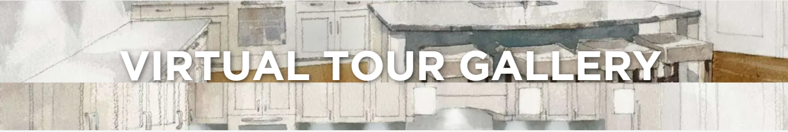

Location: Via Derna, 437014, Castelnuovo del Garda VR, Italy
Entry Fee: Tickets start from 24 Euros per day
Timings: All Days – 10 AM to 11 PM
Places To Stay Near: Hotel Parchi Del Garda, Gardaland Hotel, Hotel Gasparina
Famous Ride: Blue Tornado
Location: 77777 Marne- La- Vallée, France
Entry Fee: Tickets start at $57 USD per day
Timings: 10 AM to 11 PM
Places To Stay Near: Hotel Marne-la-Vallée, Campanile Val de France, Radisson Blu Hotel Paris
Famous Ride: Big Thunder Mountain Railroad